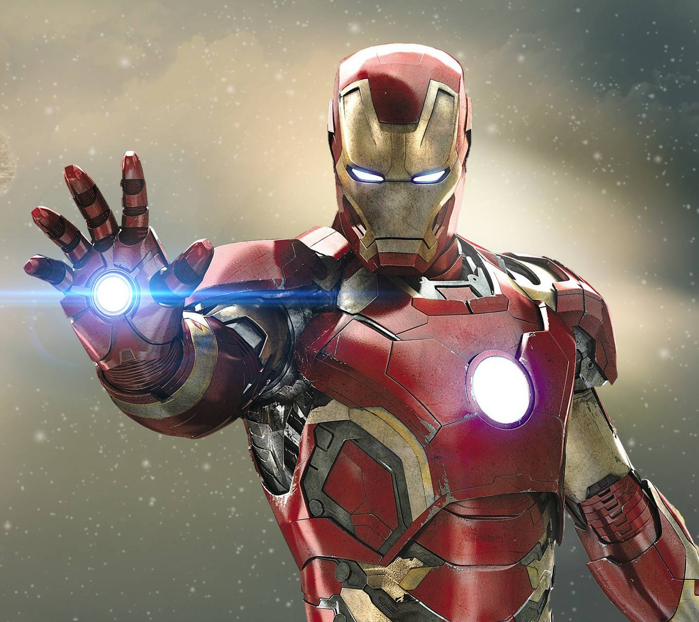

Anthony Edward "Tony" Stark was a billionaire industrialist, a founding member of the Avengers, and the former CEO of Stark Industries. A brash but brilliant inventor, Stark was self-described as a genius, billionaire, playboy, and philanthropist. With his great wealth and exceptional technical knowledge, Stark was one of the world's most powerful men following the deaths of his parents and enjoyed the playboy lifestyle for many years until he was kidnapped by the Ten Rings in Afghanistan, while demonstrating a fleet of Jericho missiles. With his life on the line, Stark created an armored suit which he used to escape his captors. Upon returning home, he utilized several more armors to use against terrorists, as well as Obadiah Stane who turned against Stark. Stark enjoyed the fame that came with his new secret identity and decided to share it with the world, publicly revealing himself as Iron Man.
Fresh off from defeating enemies all over the world, Stark found himself dying due to his own Arc Reactor poisoning his body, all while he was challenged by Ivan Vanko who attempted to destroy his legacy. After the Stark Expo Incident, Stark reluctantly agreed to serve as a consultant for S.H.I.E.L.D. where he used his position to upgrade their technology while he began a relationship with Pepper Potts. With the world yet again being threatened, Stark joined the Avengers and helped defeat the Chitauri and Loki. Due to the battle, he suffered from post-traumatic stress disorder, leading him to create the Iron Legion to safeguard the world and help him retire.
In the five years after the Snap, Stark chose to retire from being Iron Man, marrying Potts and having a daughter, Morgan Stark. When Stark discovered the key to travel through time, he rejoined the Avengers to undo the Snap, traveling back in time to retrieve the Scepter and then to regain the Tesseract. During the Battle of Earth, Stark heroically sacrificed himself to eliminate Thanos and his armies, who traveled through time to collect the Infinity Stones, saving the universe from decimation, and leaving behind a legacy as one of Earth's most revered superheroes.
My armor, it was never a distraction or a hobby, it was a cocoon. And now, I'm a changed man. You can take away my house, all my tricks and toys. But one thing you can't take away... I am Iron Man―Tony Stark .